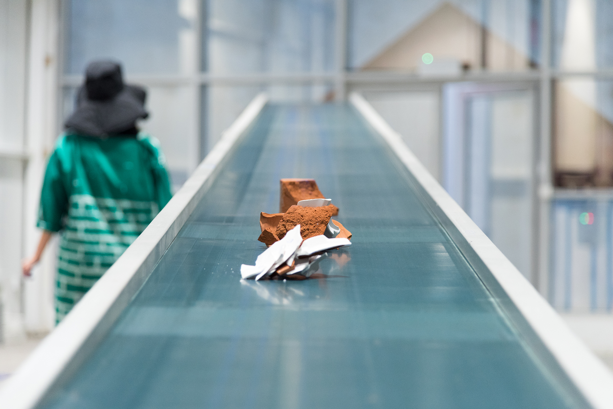

Once a community space and café in the centre of Alserkal Avenue, Nadi Al Quoz has been transformed. Its former Zen-like décor – blonde wood furnishings, lush plants, a hanging bed – now replaced with industrial and electrical elements – a conveyor belt, a heap of white stones, a soundboard with wires and knobs. These changes are a result of Rhodiola, a programme-based commission developed by artist collective 3 137, who also manage an artist-run space in Athens. Comprised of Chrysanthi Koumianaki, Kosmas Nikolaou, and Paki Vlassopoulou, the group was tasked with developing a project around the idea of maintenance, Alserkal’s thematic for 2018-2019.
The title highlights this from the outset, taking its name from a plant that typically grows in the colder regions of Europe, Asia, and North America, and is mixed in as an ingredient in vitamins. In Russia, the rhodiola root is used in traditional medicine to combat stress and supposedly promote cognitive clarity. On the wellness market, it is sold as an herbal supplement that offers a range of benefits, from heart health to reducing fatigue and boosting athletic performance.
Unfolding over six weeks (18 March-30 April 2019), Rhodiola is an extensive, ambitious project. To put it together, 3 137 has operated, in a sense, as curators – but more so collaborators – by inviting 24 artists, collectives, writers and cultural practitioners to participate or create works for the programme. The result is a series of screenings, workshops, performances, and exhibitions that take place in a physical space or are accessible online at rhodiola.ae. Inspired by the idea of the radio, one could think of Nadi Al Quoz (now referred to as Warehouse 90) as the main station, these initiatives are divided into “Waves”, each bearing a concept that traces back to the overarching theme of maintenance.
The project is similar to a previous initiative by the group entitled Babylon Radio, as artist and former Alserkal Resident Nikolaou points out. “Back in 2014, we did our very first programme in Athens, but on different scale. We invited people from local collectives and developed a community radio, which was very fruitful for those we engaged with. We were very happy with that project, so when we started with this commission, we decided to go back to the radio, then incorporate the concept of maintenance as a way of thinking, and deconstruct these two ideas,” he said.
Using Warehouse 90 as the physical centre of these activations, the commission considers the space as a site for ‘active pause’. Inside, Anastasia Douka’s industrialist installation is on view, screenings from curator Filipa Ramos’ film programme run on loop, while a soundboard plays a series of radio shows produced specifically for Rhodiola. “It’s a place to slow down, stay, and chill while being surrounded by several different actions that you can observe or think about (the installation, a film, or radio booth),” Vlassopoulou said. “Ultimately, it puts you in a situation where you can be aware of the energy needed to get things done.” Every 10 days, an activation takes place, whether it is the release of a new radio show online or the screening of a different film.
Beyond its conceptual framework, the key to understanding Rhodiola is to look at it as a big collaboration. This commission-within-a-commission style is very much in the vein of 3 137’s practice. Founded in 2012 by the three friends Koumianaki, Nikolaou, and Vlassopoulou, the artist-run space “operates as a meeting point for exchange and collaboration with other artists who are mostly based in Greece,” explains Koumianaki. “We wanted to invite young artists to organise and curate exhibitions that they may not be able to do on their own. Back then, there weren’t as many artist run spaces in Athens as there are now.” Over the years, 3 137 have been putting together exhibitions, dinners, and performances. “In the last three years, we started looking at more research-based projects,” she adds. These projects vary, from the immaterial (GABRIELA) to the more art historical (After the explosion… you hear the light) and even towards publications. All this to say that they hardly work on their own (though each artist does have his/her own individual practice outside of the group).
In as much as their collective draws in various individuals, their programme aims to do so as well. “For us, what is important is to create temporary gatherings. We want to bring people together. We’re artists, not curators, and the programme is our common artistic practice. The point is to create things together that make sense for the group, but also the local community. This is part of our practice in Athens, and I hope it's been reflected here,” says Vlassopoulou. This is seen in the choice of the radio as a starting point, as it is commonly seen as a democratic medium, but also allowing the commission to go beyond borders with a website.
The Programme
At its core, Rhodiola’s collaborative nature speaks to the potential of artists coming together to produce a project that ties them thematically, but still enables them to maintain the autonomy of their practices and express their own concepts. While the public is free to experience these works individually (catch a screening or listen to a show), they can also trace the ideas that exist within these Waves (by diving deep into the website), which consequently opens up new dimensions to how Rhodiola can be appreciated and understood.
Wave 1 | AC/Scaffold
Looking at the programme in detail, each “Wave” explores the many permutations of the notion of maintenance, starting with Wave 1 AC/Scaffold, which focuses on infrastructure, labour and the consumption of resources through Anastasia Douka’s installation/intervention OROBORO, referencing an emblem of infinity, a snake swallowing its tail. An isolated conveyor belt sits inside the warehouse with an array of ceramic items (plates, bricks, pots) surrounding it. During Art Week at Alserkal Avenue, Douka loaded them onto the belt, after which they inevitably smashed to pieces as they hit the floor. As the programme continues, other participants of the project will regularly send off pieces to the machine for their destruction, calling to mind the repetitive and futile tasks undertaken in everyday life.

Wave 2 | Cookies
For Wave 2, Cookies, most of the elements exist in the digital realm. The section’s title offers wordplay through its multiple meanings – a simple snack or computing term referring to data used by websites to track or identify users. Here, the idea of the radio comes to the fore, with artist collectives producing shows specifically for the commission, which are released and made available on the Rhodiola website for the public to listen to. The shows, which mainly centre around the idea of the sustainability of artistic practice and initiatives specific to each collective, include Non-understandable Art and How to Understand It by Karachi-based Vasl Artists’ Association, Undone by the APART Collective from Slovenia, and Once Upon a Time by Athens-based Enterprise Projects. For Vasl’s hour-long piece, the collective presents a fictional conversation between an art collector and artists to interrogate how art and its purpose is perceived by those who purchase it. Meanwhile, APART’s recording focuses on the idea of collectivity, in both a sociological and artistic sense.
On 11 April, a radio show by NGO Riwaq from Palestine titled Cultivating hope: Dreaming and making of Palestine, which considers the role of architectural restoration in rebuilding society was also released online. On 25 April, Amirah Tajdin of Bedouin in Furs will have a live session about contemporary romance in Warehouse 90, the recording of which will be added to the online archive afterwards.
Wave 3 | Dentist
The third Wave, Dentist, turns its attention to the body, or rather the representation of the body and the self in the physical and virtual sense. “You need to go the dentist to maintain your teeth, but also to create a perfect smile. We wanted to play with the idea of lifestyle, of how we present ourselves on the Internet and social media,” says Nikolaou. Inside Warehouse 90, 3 137 have set up a Vitamin Service table, on which vitamin supplements are displayed. These ‘cocktails’ target specific issues and needs, such as ‘High Performance’, ‘Stress’, and ‘Happiness’, all of which have been formulated by Irene Karouzaki and Dimitris Nikolaou, family members of artists Koumianaki and Nikolaou. The vitamin servers don a set of androgynous outfits by sustainable fashion designer Christina Christodoulou under her brand It’s a Shirt. As part of this Wave, Rhodiola hosted a talk during Art Week with Dr. Heather Eade, a naturopath, who discussed the concept of integrative medicine and how the structure of the current health can be improved to fit the needs of wellness. Building on the idea of maintenance, Eade answered questions about mental and physical upkeep. The talk was then uploaded onto the Rhodiola website for visitors to listen to later on.
Wave 4 | Snooze
The penultimate Wave continues this thread of well-being, shifting towards rejuvenation and meditation. Under Snooze, writer and curator Filipa Ramos hosts a film programme entitled A Sea of Sound – Visual Songs for the Ocean that runs throughout the length of the commission. Ramos is the co-founder of Vdrome, an online platform for visual artists and filmmakers to showcase their work. For Rhodiola, she has selected a series of films that are screened inside Warehouse 90 on a schedule. Artist Eduardo Navarro conducted his workshop What is the Point of Being a Turtle? (21 March) wherein participants were asked to roleplay as these slow-moving creatures as a form of meditation. Humorous on the surface, the participatory and performative intervention is part of Navarro’s practice, as he finds ways to develop new understandings of our world through unconventional measures. Online, a soothing sound piece by Raja’a Khalid mimics audio meditation guides, where a voice takes listeners through positive maxims before offering a hit of bitter reality.
Wave 5 | Sunscreen
The fifth and final wave, Sunscreen, comprise commissioned texts that investigate the maintenance of systems in corporations, societies, and within the art world. In a series of vignettes, New York-based writer Rahel Aima envisions the fallout of solar superstorm in her fictional piece Aurelia Equatorialis. Curator Tom Clark presents his essay Dependencies, which is about infrastructure (or in a sense, power dynamics and structures) in the context of art, looking at the relationship between institutions, curators, and artists. Meanwhile, miss dialectic’s A Day in the Light of MD takes the popular essay Wear Sunscreen (further popularized by Baz Luhrmann via spoken word song) as a starting point to look our own daily practices and issues of personal maintenance.
Rhodiola is commissioned by Alserkal Arts Foundation and runs until 30 April 2019 at Warehouse 90, Alserkal Avenue, and online at rhodiola.ae
(Photography by Nikolas Leventakis and videography by Manolis Foinikianakis)
 Ultimately, it puts you in a situation where you can be aware of the energy needed to get things done.
Ultimately, it puts you in a situation where you can be aware of the energy needed to get things done.